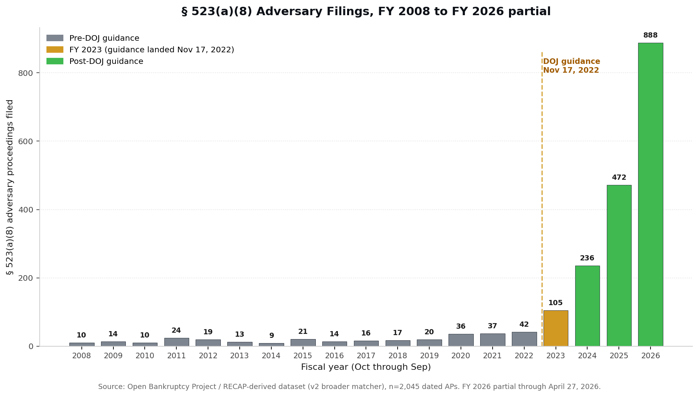

The headline numbers
Filings by fiscal year, FY 2008 to FY 2026
Annual § 523(a)(8) AP filings nationwide, federal fiscal-year basis (Oct through Sep). The reference lines mark BAPCPA (2005), the Nov 17, 2022 DOJ guidance, and the June 2023 SAVE plan launch.

The numbers behind the chart
| Fiscal Year | APs filed | Notes |
|---|---|---|
| FY 2008 | 12 | |
| FY 2009 | 6 | |
| FY 2010 | 6 | |
| FY 2011 | 5 | |
| FY 2012 | 13 | |
| FY 2013 | 10 | |
| FY 2014 | 3 | |
| FY 2015 | 22 | |
| FY 2016 | 10 | |
| FY 2017 | 9 | |
| FY 2018 | 11 | |
| FY 2019 | 25 | |
| FY 2020 | 28 | |
| FY 2021 | 16 | |
| FY 2022 | 19 | last full FY before the DOJ guidance |
| FY 2023 | 57 | Nov 2022 guidance hits about 6 weeks in; +200% over FY 2022 |
| FY 2024 | 179 | +214% over FY 2023 |
| FY 2025 | 424 | +137% over FY 2024 |
| FY 2026 (partial) | 857 | through April 27, 2026; ~7 of 12 months |
Pre-DOJ baseline FY 2008 to FY 2022: n = 195 over 15 years, mean 13.0 per year.
Methodology
Data sources
- Absolute counts (632 / 1,220): U.S. Department of Justice press releases, Aug 2023 and Apr 2024.
- Fiscal-year shape: Open Bankruptcy Project § 523(a)(8) RECAP-derived dataset, n = 1,770 dated APs from the CourtListener / RECAP archive (Free Law Project) coverage of U.S. bankruptcy adversary proceedings, FY 2008 to April 27, 2026.
- Underlying guidance: DOJ Nov 17, 2022 guidance text; National Consumer Law Center explainer.
Matcher (how OBP identifies APs from CourtListener)
The OBP scrape identifies adversary proceedings via case-name pattern matching on indexed CourtListener dockets:
- Defendant-name regex on
caseName: must contain one of Department of Education, NELNET, Mohela, Navient, Sallie Mae, Great Lakes Higher Education, ECMC, Pennsylvania Higher Education, Edfinancial, Aidvantage. - Court filter:
court_idends inb(U.S. bankruptcy court). - AP-style filter: case name contains " v. " or " v " (case insensitive).
- Per-court paginated CourtListener pull, capped at 25 pages per court.
The CourtListener nature-of-suit field is empty for nearly all bankruptcy adversary proceedings, so a code-based filter (NOS = 67) is not feasible against this dataset.
Known gaps in the matcher
- APs styled Debtor v. United States (no servicer or agency in the caption) are excluded.
- APs against private servicers not in the matcher list (AES, Discover, KHEAA, Wells Fargo Education, Citizens, USA Funds, etc.) are excluded.
- The 25-page-per-court cap can truncate high-volume districts. Geographic distribution is therefore not reported on this page.
These gaps are why OBP counts run roughly an order of magnitude lower than DOJ's. The directional shape of the time series is robust and corroborated by DOJ's own published numbers.
Caveats
RECAP indexing lag and coverage. RECAP archive coverage of older bankruptcy adversary proceedings is incomplete and uneven across districts and years. Pre-2018 absolute counts are floor estimates. RECAP receives federal docket data from PACER on a rolling basis driven by user uploads, court watcher tooling, and ongoing scraping by the Free Law Project.
Filings, not outcomes. The chart counts APs filed, not APs that result in actual discharge of student loan debt. Roughly half of filed APs settle or are dismissed before judgment. Outcome classification is the second phase of this project.
Federal vs. private servicers. The DOJ guidance applies to federal student loan APs handled by U.S. Trustees and the Department of Education. Private-servicer APs follow different procedural paths and are not directly governed by this guidance.
Pre-2022 comparison. DOJ does not publish § 523(a)(8) AP filing counts for the pre-2022 era. The "13 per year" baseline is OBP's RECAP-derived floor estimate for FY 2008 to FY 2022.
What Phase 2 will add (mid May 2026)
- Outcome classification. For each AP in the dataset, the disposition: discharged, partial discharge, settled, denied, dismissed, or pending. Mix of automated parsing of final orders and human review of edge cases.
- Within-dataset pre vs. post discharge rates. Same matcher, same coverage, before and after November 17, 2022.
- Pro se vs. represented success rate disparity. Coded from CourtListener party / attorney metadata.
- Broader matcher. Adding APs styled Debtor v. United States and additional private servicers (AES, Discover, KHEAA, Wells Fargo Education, Citizens, USA Funds) to push coverage from ~13 percent toward ~30 to 40 percent of the true population.
- Geographic breakdown. Only after the broader matcher removes the per-court cap distortion. Without that fix the geographic view is misleading and is not published here.
For journalists, researchers, and policy staff
If you're working on a piece, a brief, or a study that touches student loan dischargeability, we're happy to share the working dataset, walk through the methodology, or pull a focused cut for your jurisdiction. The institutional contact is info@openbankruptcyproject.org.
The Open Bankruptcy Project is a 501(c)(3) public charity (EIN 41-5159631) operating in the public interest. We do not represent clients, take referral fees, or sell data. Methodology, source code, and data are public on GitHub.
Citation
Open Bankruptcy Project, § 523(a)(8) Adversary Filings: National Tracker, https://studentloandefault.org/research/523a8-discharge-trends/ (last updated April 28, 2026). Absolute post-guidance counts: U.S. Department of Justice press releases, August 2023 and April 2024.